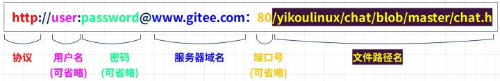
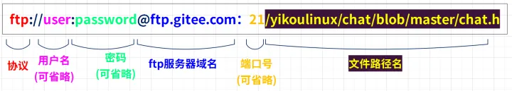
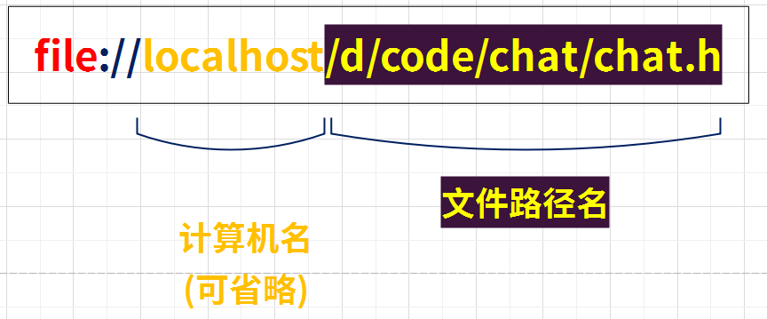
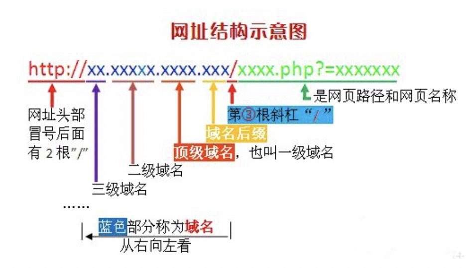

<!DOCTYPE html><html lang="zh-CN" data-theme="light"><head><meta charset="UTF-8"><meta http-equiv="X-UA-Compatible" content="IE=edge"><meta name="viewport" content="width=device-width, initial-scale=1.0,viewport-fit=cover"><title>跨域问题及解决方案 | Maple's  Blog</title><meta name="author" content="Maple"><meta name="copyright" content="Maple"><meta name="format-detection" content="telephone=no"><meta name="theme-color" content="#ffffff"><meta name="description" content="跨域问题什么是跨域问题？出于浏览器的同源策略限制。同源策略（Sameoriginpolicy）是一种约定，它是浏览器最核心也最基本的安全功能，如果缺少了同源策略，则浏览器的正常功能可能都会受到影响。可以说Web是构建在同源策略基础之上的，浏览器只是针对同源策略的一种实现。同源策略会阻止一个域的javascript脚本和另外一个域的内容进行交互。所谓同源（即指在同一个域）就是两个页面的URL具有相同">
<meta property="og:type" content="article">
<meta property="og:title" content="跨域问题及解决方案">
<meta property="og:url" content="https://maple_eitba.gitee.io/maple/2023/05/11/%E8%B7%A8%E5%9F%9F%E9%97%AE%E9%A2%98/index.html">
<meta property="og:site_name" content="Maple&#39;s  Blog">
<meta property="og:description" content="跨域问题什么是跨域问题？出于浏览器的同源策略限制。同源策略（Sameoriginpolicy）是一种约定，它是浏览器最核心也最基本的安全功能，如果缺少了同源策略，则浏览器的正常功能可能都会受到影响。可以说Web是构建在同源策略基础之上的，浏览器只是针对同源策略的一种实现。同源策略会阻止一个域的javascript脚本和另外一个域的内容进行交互。所谓同源（即指在同一个域）就是两个页面的URL具有相同">
<meta property="og:locale" content="zh_CN">
<meta property="og:image" content="https://www.leixue.com/uploads/2019/03/Cross-Domain.jpg">
<meta property="article:published_time" content="2023-05-11T02:50:43.000Z">
<meta property="article:modified_time" content="2023-05-11T08:12:13.200Z">
<meta property="article:author" content="Maple">
<meta property="article:tag" content="跨域">
<meta name="twitter:card" content="summary">
<meta name="twitter:image" content="https://www.leixue.com/uploads/2019/03/Cross-Domain.jpg"><link rel="shortcut icon" href="/maple/img/favicon.jpg"><link rel="canonical" href="https://maple_eitba.gitee.io/maple/2023/05/11/%E8%B7%A8%E5%9F%9F%E9%97%AE%E9%A2%98/index.html"><link rel="preconnect" href="//cdn.jsdelivr.net"/><link rel="stylesheet" href="/maple/css/index.css"><link rel="stylesheet" href="https://cdn.jsdelivr.net/npm/@fortawesome/fontawesome-free/css/all.min.css" media="print" onload="this.media='all'"><link rel="stylesheet" href="https://cdn.jsdelivr.net/npm/@fancyapps/ui/dist/fancybox/fancybox.min.css" media="print" onload="this.media='all'"><script>const GLOBAL_CONFIG = { 
  root: '/maple/',
  algolia: undefined,
  localSearch: {"path":"/maple/search.xml","preload":false,"top_n_per_article":1,"unescape":false,"languages":{"hits_empty":"找不到您查询的内容：${query}","hits_stats":"共找到 ${hits} 篇文章"}},
  translate: {"defaultEncoding":1,"translateDelay":0,"msgToTraditionalChinese":"繁","msgToSimplifiedChinese":"簡"},
  noticeOutdate: undefined,
  highlight: {"plugin":"highlighjs","highlightCopy":true,"highlightLang":true,"highlightHeightLimit":800},
  copy: {
    success: '复制成功',
    error: '复制错误',
    noSupport: '浏览器不支持'
  },
  relativeDate: {
    homepage: false,
    post: false
  },
  runtime: '',
  dateSuffix: {
    just: '刚刚',
    min: '分钟前',
    hour: '小时前',
    day: '天前',
    month: '个月前'
  },
  copyright: {"limitCount":22,"languages":{"author":"作者: Maple","link":"链接: ","source":"来源: Maple's  Blog","info":"著作权归作者所有。商业转载请联系作者获得授权，非商业转载请注明出处。"}},
  lightbox: 'fancybox',
  Snackbar: undefined,
  source: {
    justifiedGallery: {
      js: 'https://cdn.jsdelivr.net/npm/flickr-justified-gallery/dist/fjGallery.min.js',
      css: 'https://cdn.jsdelivr.net/npm/flickr-justified-gallery/dist/fjGallery.min.css'
    }
  },
  isPhotoFigcaption: false,
  islazyload: false,
  isAnchor: false,
  percent: {
    toc: true,
    rightside: true,
  }
}</script><script id="config-diff">var GLOBAL_CONFIG_SITE = {
  title: '跨域问题及解决方案',
  isPost: true,
  isHome: false,
  isHighlightShrink: false,
  isToc: true,
  postUpdate: '2023-05-11 16:12:13'
}</script><noscript><style type="text/css">
  #nav {
    opacity: 1
  }
  .justified-gallery img {
    opacity: 1
  }

  #recent-posts time,
  #post-meta time {
    display: inline !important
  }
</style></noscript><script>(win=>{
    win.saveToLocal = {
      set: function setWithExpiry(key, value, ttl) {
        if (ttl === 0) return
        const now = new Date()
        const expiryDay = ttl * 86400000
        const item = {
          value: value,
          expiry: now.getTime() + expiryDay,
        }
        localStorage.setItem(key, JSON.stringify(item))
      },

      get: function getWithExpiry(key) {
        const itemStr = localStorage.getItem(key)

        if (!itemStr) {
          return undefined
        }
        const item = JSON.parse(itemStr)
        const now = new Date()

        if (now.getTime() > item.expiry) {
          localStorage.removeItem(key)
          return undefined
        }
        return item.value
      }
    }
  
    win.getScript = url => new Promise((resolve, reject) => {
      const script = document.createElement('script')
      script.src = url
      script.async = true
      script.onerror = reject
      script.onload = script.onreadystatechange = function() {
        const loadState = this.readyState
        if (loadState && loadState !== 'loaded' && loadState !== 'complete') return
        script.onload = script.onreadystatechange = null
        resolve()
      }
      document.head.appendChild(script)
    })
  
    win.getCSS = (url,id = false) => new Promise((resolve, reject) => {
      const link = document.createElement('link')
      link.rel = 'stylesheet'
      link.href = url
      if (id) link.id = id
      link.onerror = reject
      link.onload = link.onreadystatechange = function() {
        const loadState = this.readyState
        if (loadState && loadState !== 'loaded' && loadState !== 'complete') return
        link.onload = link.onreadystatechange = null
        resolve()
      }
      document.head.appendChild(link)
    })
  
      win.activateDarkMode = function () {
        document.documentElement.setAttribute('data-theme', 'dark')
        if (document.querySelector('meta[name="theme-color"]') !== null) {
          document.querySelector('meta[name="theme-color"]').setAttribute('content', '#0d0d0d')
        }
      }
      win.activateLightMode = function () {
        document.documentElement.setAttribute('data-theme', 'light')
        if (document.querySelector('meta[name="theme-color"]') !== null) {
          document.querySelector('meta[name="theme-color"]').setAttribute('content', '#ffffff')
        }
      }
      const t = saveToLocal.get('theme')
    
          if (t === 'dark') activateDarkMode()
          else if (t === 'light') activateLightMode()
        
      const asideStatus = saveToLocal.get('aside-status')
      if (asideStatus !== undefined) {
        if (asideStatus === 'hide') {
          document.documentElement.classList.add('hide-aside')
        } else {
          document.documentElement.classList.remove('hide-aside')
        }
      }
    
    const detectApple = () => {
      if(/iPad|iPhone|iPod|Macintosh/.test(navigator.userAgent)){
        document.documentElement.classList.add('apple')
      }
    }
    detectApple()
    })(window)</script><link rel="stylesheet" href="/css/maple_background.css"><meta name="generator" content="Hexo 5.4.2"></head><body><div id="sidebar"><div id="menu-mask"></div><div id="sidebar-menus"><div class="avatar-img is-center"></div><div class="sidebar-site-data site-data is-center"><a href="/maple/archives/"><div class="headline">文章</div><div class="length-num">34</div></a><a href="/maple/tags/"><div class="headline">标签</div><div class="length-num">30</div></a><a href="/maple/categories/"><div class="headline">分类</div><div class="length-num">12</div></a></div><hr/><div class="menus_items"><div class="menus_item"><a class="site-page" href="/maple/"><i class="fa-fw fas fa-home"></i><span> 首页</span></a></div><div class="menus_item"><a class="site-page group" href="javascript:void(0);"><i class="fa-fw fas fa-blog"></i><span> 博文</span><i class="fas fa-chevron-down"></i></a><ul class="menus_item_child"><li><a class="site-page child" href="/maple/categories/"><i class="fa-fw fa fa-archive"></i><span> 分类</span></a></li><li><a class="site-page child" href="/maple/tags/"><i class="fa-fw fa fa-tags"></i><span> 标签</span></a></li><li><a class="site-page child" href="/maple/archives/"><i class="fa-fw fa fa-folder-open"></i><span> 归档</span></a></li></ul></div><div class="menus_item"><a class="site-page group" href="javascript:void(0);"><i class="fa-fw fas fa-mug-hot"></i><span> 休闲</span><i class="fas fa-chevron-down"></i></a><ul class="menus_item_child"><li><a class="site-page child" href="/maple/photos/"><i class="fa-fw fa fa-camera-retro"></i><span> 摄影</span></a></li><li><a class="site-page child" href="/maple/movies/"><i class="fa-fw fas fa-video"></i><span> 电影</span></a></li></ul></div><div class="menus_item"><a class="site-page" href="/maple/about/"><i class="fa-fw fas fa-user"></i><span> 笔者</span></a></div></div></div></div><div class="post" id="body-wrap"><header class="post-bg" id="page-header" style="background-image: url('https://www.leixue.com/uploads/2019/03/Cross-Domain.jpg')"><nav id="nav"><span id="blog-info"><a href="/maple/" title="Maple's  Blog"><span class="site-name">Maple's  Blog</span></a></span><div id="menus"><div id="search-button"><a class="site-page social-icon search" href="javascript:void(0);"><i class="fas fa-search fa-fw"></i><span> 搜索</span></a></div><div class="menus_items"><div class="menus_item"><a class="site-page" href="/maple/"><i class="fa-fw fas fa-home"></i><span> 首页</span></a></div><div class="menus_item"><a class="site-page group" href="javascript:void(0);"><i class="fa-fw fas fa-blog"></i><span> 博文</span><i class="fas fa-chevron-down"></i></a><ul class="menus_item_child"><li><a class="site-page child" href="/maple/categories/"><i class="fa-fw fa fa-archive"></i><span> 分类</span></a></li><li><a class="site-page child" href="/maple/tags/"><i class="fa-fw fa fa-tags"></i><span> 标签</span></a></li><li><a class="site-page child" href="/maple/archives/"><i class="fa-fw fa fa-folder-open"></i><span> 归档</span></a></li></ul></div><div class="menus_item"><a class="site-page group" href="javascript:void(0);"><i class="fa-fw fas fa-mug-hot"></i><span> 休闲</span><i class="fas fa-chevron-down"></i></a><ul class="menus_item_child"><li><a class="site-page child" href="/maple/photos/"><i class="fa-fw fa fa-camera-retro"></i><span> 摄影</span></a></li><li><a class="site-page child" href="/maple/movies/"><i class="fa-fw fas fa-video"></i><span> 电影</span></a></li></ul></div><div class="menus_item"><a class="site-page" href="/maple/about/"><i class="fa-fw fas fa-user"></i><span> 笔者</span></a></div></div><div id="toggle-menu"><a class="site-page" href="javascript:void(0);"><i class="fas fa-bars fa-fw"></i></a></div></div></nav><div id="post-info"><h1 class="post-title">跨域问题及解决方案</h1><div id="post-meta"><div class="meta-firstline"><span class="post-meta-date"><i class="far fa-calendar-alt fa-fw post-meta-icon"></i><span class="post-meta-label">发表于</span><time class="post-meta-date-created" datetime="2023-05-11T02:50:43.000Z" title="发表于 2023-05-11 10:50:43">2023-05-11</time><span class="post-meta-separator">|</span><i class="fas fa-history fa-fw post-meta-icon"></i><span class="post-meta-label">更新于</span><time class="post-meta-date-updated" datetime="2023-05-11T08:12:13.200Z" title="更新于 2023-05-11 16:12:13">2023-05-11</time></span><span class="post-meta-categories"><span class="post-meta-separator">|</span><i class="fas fa-inbox fa-fw post-meta-icon"></i><a class="post-meta-categories" href="/maple/categories/%E8%AE%A1%E7%AE%97%E6%9C%BA%E7%BD%91%E7%BB%9C/">计算机网络</a></span></div><div class="meta-secondline"><span class="post-meta-separator">|</span><span class="post-meta-wordcount"><i class="far fa-file-word fa-fw post-meta-icon"></i><span class="post-meta-label">字数总计:</span><span class="word-count">1.5k</span><span class="post-meta-separator">|</span><i class="far fa-clock fa-fw post-meta-icon"></i><span class="post-meta-label">阅读时长:</span><span>4分钟</span></span></div></div></div></header><main class="layout" id="content-inner"><div id="post"><article class="post-content" id="article-container"><h1 id="跨域问题"><a href="#跨域问题" class="headerlink" title="跨域问题"></a>跨域问题</h1><h2 id="什么是跨域问题？"><a href="#什么是跨域问题？" class="headerlink" title="什么是跨域问题？"></a>什么是跨域问题？</h2><p>出于浏览器的<font color="red">同源策略</font>限制。同源策略（Sameoriginpolicy）是一种约定，它是浏览器最核心也最基本的安全功能，如果缺少了同源策略，则浏览器的正常功能可能都会受到影响。可以说Web是构建在同源策略基础之上的，浏览器只是针对同源策略的一种实现。<font color="red">同源策略</font>会阻止一个域的<font color="red"><strong>javascript脚本</strong></font>和另外一个域的内容进行交互。<font color="cornflowerblue">所谓同源（即指在同一个域）就是两个页面的URL具有相同的协议（protocol），主机/域名（host）和端口号（port）。</font></p>
<h2 id="URI、URL和URN的区别"><a href="#URI、URL和URN的区别" class="headerlink" title="URI、URL和URN的区别"></a>URI、URL和URN的区别</h2><p>当我们打开浏览器，要访问一个网站或者一个ftp服务器的时候，输入一串字符串， 比如：<code>https://blog.csdn.net/</code>或者：<code>ftp://192.168.0.111/</code>，这样我们就可以得到一个html格式的页面或者一个文件。那么这个地址是什么意思呢？就必须要从URI、URL、URN讲起。</p>
<h3 id="定义"><a href="#定义" class="headerlink" title="定义"></a>定义</h3><ul>
<li><strong>URI = Uniform Resource Identifier 统一资源标志符</strong></li>
<li><strong>URL = Uniform Resource Locator 统一资源定位符</strong></li>
<li><strong>URN = Uniform Resource Name 统一资源名称</strong></li>
</ul>
<p>简单来说，URI是抽象的定义，不管用什么方法表示，只要能定位一个资源，就叫URI。本来设想的使用两种方法定位：1、<strong>URL，用地址定位</strong>；2、<strong>URN 用名称定位</strong>。但是urn没流行起来，导致现在大家说的所有的UR都是默认就是URL。</p>
<p><strong>举个例子</strong>：去村子找个具体的人（URI），如果用地址：某村多少号房子第几间房的主人，就是URL；如果用身份证号+名字去找就是URN了。</p>
<h3 id="区别"><a href="#区别" class="headerlink" title="区别"></a>区别</h3><ol>
<li>URI是以一种抽象的，高层次概念定义统一资源标识，而URL则是具体的资源标识的方式。URL是一种URI。</li>
<li>格式不同：URL的格式一般由下列四部分组成：<ol>
<li>第一部分是协议(或称为服务方式)；</li>
<li>第二部分是存有该资源的主机IP地址，也叫域名；</li>
<li>第三部分是端口号；</li>
<li>第四部分是主机资源的具体地址。</li>
</ol>
</li>
</ol>
<p>3、在Java的URI中，一个URI实例可以代表绝对的，也可以是相对的，只要它符合URI的语法规则。而URL类则不仅符合语义，还包含了定位该资源的信息，因此它不能是相对的，schema（protocol，协议）必须被指定。</p>
<h3 id="三者的关系"><a href="#三者的关系" class="headerlink" title="三者的关系"></a>三者的关系</h3>

<h2 id="URL结构解析"><a href="#URL结构解析" class="headerlink" title="URL结构解析"></a>URL结构解析</h2><p>URL代表着是统一资源定位符（UniformResourceLocator）。</p>
<p>作用是为了告诉使用者 某个资源在 Web 上的地址。比如：用HTTP协议访问Web服务器：</p>


<p>用FTP协议下载和上传文件的URL：</p>


<p>读取客户端计算机本地文件的URL：</p>


<p>URL的结构组成如下图：</p>


<h4 id="协议"><a href="#协议" class="headerlink" title="协议"></a>协议</h4><p>尽管 URL 有各种不同的写法， 但它们有一个共同点， 开头部分的内容必须是协议类型，可以是http、ftp、mailto或者https，这部分文字都表示浏览器应当使用的访问方法,会用‘//’为分隔符。决定了后面部分的写法， 因此并不会造成混乱。</p>
<h4 id="用户名-密码"><a href="#用户名-密码" class="headerlink" title="用户名/密码"></a>用户名/密码</h4><p>用户名密码通常可以省略。</p>
<h4 id="域名"><a href="#域名" class="headerlink" title="域名"></a>域名</h4><p>域名是<code>www.gitee.com</code>，在发送请求前，会向DNS服务器请求将域名字符串解析为IP地址。如果已经知道ip，还可以跳过DNS解析那一步，直接把IP当做域名部分使用。</p>
<p>域名是<font color="cornflowerblue">从右向左</font>进行分析的，依次为：<strong>域名后缀、顶级域名（一级域名）、二级域名、三级域名</strong>，如图：</p>


<h4 id="端口"><a href="#端口" class="headerlink" title="端口"></a>端口</h4><p>域名后面有些时候会带有端口，和域名之间用’:’分隔，端口不是一个URL的必须的部分。 当网址为http://时，默认端口为80， https://时，默认端口是443， ftp://时，默认端口是21。此时端口号可以省略不写。</p>
<h4 id="文件路径-文件名"><a href="#文件路径-文件名" class="headerlink" title="文件路径/文件名"></a>文件路径/文件名</h4><p><strong>从域名之后的第一个/开始到最后一个/为止，是虚拟目录的部分</strong>。虚拟目录也不是URL必须的部分，上述实例http协议url中的虚拟目录是：<code>/yikoulinux/chat/blob/master/</code></p>
<p><strong>从域名最后一个’/‘开始到’?’为止，是文件名部分</strong>；如果没有?，则是从域名最后一个/开始到#为止，是文件名部分；如果没有?和#，那么就从域名的最后一个/从开始到结束，都是文件名部分。</p>
<p>文件名也不是一个URL的必须部分。</p>
<p>Demo：判断下列URL与 <code>http://www.example.com:8080</code>是否是跨域？</p>
<table>
<thead>
<tr>
<th align="center">比较的URL</th>
<th align="center">是否跨域</th>
<th align="center">原因</th>
</tr>
</thead>
<tbody><tr>
<td align="center"><strong>http</strong>://<strong><a target="_blank" rel="noopener" href="http://www.example.com/">www.example.com</a></strong>:<strong>8080</strong>/dir/page.html</td>
<td align="center">否</td>
<td align="center">协议、主机/域名、端口号等相同</td>
</tr>
<tr>
<td align="center"><strong>http</strong>://username:password@<strong><a target="_blank" rel="noopener" href="http://www.example.com/">www.example.com</a></strong>:<strong>8080</strong>/dir/page.html</td>
<td align="center">否</td>
<td align="center">协议、主机/域名、端口号等相同</td>
</tr>
<tr>
<td align="center"><a href="http://www.example.com:**81**/dir/page.html">http://www.example.com:**81**/dir/page.html</a></td>
<td align="center">跨域</td>
<td align="center">端口号不相同</td>
</tr>
<tr>
<td align="center"><code>https://www.example.com:8080</code></td>
<td align="center">跨域</td>
<td align="center">协议不相同</td>
</tr>
<tr>
<td align="center"><code>http://en.example.com:8080</code></td>
<td align="center">跨域</td>
<td align="center">主机/域名不相同</td>
</tr>
</tbody></table>
<blockquote>
<p>请注意：localhost和127.0.0.1虽然都指向本机，但也属于跨域。</p>
</blockquote>
<h2 id="解决方案"><a href="#解决方案" class="headerlink" title="解决方案"></a>解决方案</h2><p>常见的几种解决方案：</p>
<ul>
<li><p><strong>服务器代理</strong></p>
<ul>
<li>让请求和响应双方url不同源，域名不同。</li>
</ul>
</li>
<li><p><strong>改发JSONP</strong></p>
<ul>
<li>将ajax请求改为JSONP<ul>
<li>不是ajax</li>
<li>只能支持<code>get方式</code></li>
</ul>
</li>
</ul>
</li>
<li><p><strong>CORS</strong></p>
<ul>
<li>CORS是一个W3C标准，全称是”跨域资源共享”（Cross-origin resource sharing）。它允许浏览器向跨源服务器，发出XMLHttpRequest请求，从而克服了AJAX只能同源使用的限制。</li>
<li>CORS需要浏览器和服务器同时支持。目前，所有浏览器都支持该功能，IE浏览器不能低于IE10(ie8通过XDomainRequest能支持CORS)。</li>
</ul>
</li>
<li><p>Spring MVC中提供的**@CrossOrigin注解**</p>
<ul>
<li>当域名<code>www.abc.com</code>下的js代码去访问<code>www.def.com</code>域名下的资源，就会受到限制。使用@CrossOrigin可以处理跨域请求，让你能访问不是一个域的文件。</li>
</ul>
</li>
</ul>
<hr>
<p><strong>参考文档：</strong></p>
<p><a target="_blank" rel="noopener" href="https://blog.csdn.net/weixin_66375317/article/details/124545878?ops_request_misc=%257B%2522request%255Fid%2522%253A%2522168377237516800211595928%2522%252C%2522scm%2522%253A%252220140713.130102334..%2522%257D&request_id=168377237516800211595928&biz_id=0&utm_medium=distribute.pc_search_result.none-task-blog-2~all~top_positive~default-1-124545878-null-null.142%5Ev86%5Ewechat,239%5Ev2%5Einsert_chatgpt&utm_term=%E8%B7%A8%E5%9F%9F&spm=1018.2226.3001.4187">什么是跨域？跨域解决方法</a></p>
<hr>
</article><div class="post-copyright"><div class="post-copyright__author"><span class="post-copyright-meta">文章作者: </span><span class="post-copyright-info"><a href="https://maple_eitba.gitee.io/maple">Maple</a></span></div><div class="post-copyright__type"><span class="post-copyright-meta">文章链接: </span><span class="post-copyright-info"><a href="https://maple_eitba.gitee.io/maple/2023/05/11/%E8%B7%A8%E5%9F%9F%E9%97%AE%E9%A2%98/">https://maple_eitba.gitee.io/maple/2023/05/11/%E8%B7%A8%E5%9F%9F%E9%97%AE%E9%A2%98/</a></span></div><div class="post-copyright__notice"><span class="post-copyright-meta">版权声明: </span><span class="post-copyright-info">本博客所有文章除特别声明外，均采用 <a href="https://creativecommons.org/licenses/by-nc-sa/4.0/" target="_blank">CC BY-NC-SA 4.0</a> 许可协议。转载请注明来自 <a href="https://maple_eitba.gitee.io/maple" target="_blank">Maple's  Blog</a>！</span></div></div><div class="tag_share"><div class="post-meta__tag-list"><a class="post-meta__tags" href="/maple/tags/%E8%B7%A8%E5%9F%9F/">跨域</a></div><div class="post_share"></div></div><div class="post-reward"><div class="reward-button"><i class="fas fa-qrcode"></i> 打赏</div><div class="reward-main"><ul class="reward-all"><li class="reward-item"><a href="/maple/img/wechatpay.png" target="_blank"></a><div class="post-qr-code-desc">微信</div></li></ul></div></div><nav class="pagination-post" id="pagination"><div class="prev-post pull-left"><a href="/maple/2023/05/12/Git/" title="Git命令"><div class="pagination-info"><div class="label">上一篇</div><div class="prev_info">Git命令</div></div></a></div><div class="next-post pull-right"><a href="/maple/2023/05/10/%E6%99%AE%E9%80%9AToken%E4%BB%A4%E7%89%8C-vs-JWT%E4%BB%A4%E7%89%8C/" title="普通Token令牌 vs. JWT令牌"><div class="pagination-info"><div class="label">下一篇</div><div class="next_info">普通Token令牌 vs. JWT令牌</div></div></a></div></nav></div><div class="aside-content" id="aside-content"><div class="card-widget card-info"><div class="is-center"><div class="avatar-img"></div><div class="author-info__name">Maple</div><div class="author-info__description">一 切 都 是 最 好 的 安 排 !</div></div><div class="card-info-data site-data is-center"><a href="/maple/archives/"><div class="headline">文章</div><div class="length-num">34</div></a><a href="/maple/tags/"><div class="headline">标签</div><div class="length-num">30</div></a><a href="/maple/categories/"><div class="headline">分类</div><div class="length-num">12</div></a></div><div class="card-info-social-icons is-center"><a class="social-icon" href="https://maple8.github.io/" target="_blank" title="Old Version Blog"><i class="fas fa-blog"></i></a><a class="social-icon" href="https://gitee.com/maple_eitba" target="_blank" title="Github"><i class="fab fa-github"></i></a><a class="social-icon" href="mailto:maple_eitba@163.com" target="_blank" title="Email"><i class="fas fa-envelope"></i></a><a class="social-icon" href="http://wpa.qq.com/msgrd?v=3&amp;uin=790379323&amp;site=qq&amp;menu=yes" target="_blank" title="QQ"><i class="fab fa-qq"></i></a></div></div><div class="card-widget card-announcement"><div class="item-headline"><i class="fas fa-bullhorn fa-shake"></i><span>公告</span></div><div class="announcement_content">原创&引用博客,记录并分享学习经验...</div></div><div class="sticky_layout"><div class="card-widget" id="card-toc"><div class="item-headline"><i class="fas fa-stream"></i><span>目录</span><span class="toc-percentage"></span></div><div class="toc-content"><ol class="toc"><li class="toc-item toc-level-1"><a class="toc-link" href="#%E8%B7%A8%E5%9F%9F%E9%97%AE%E9%A2%98"><span class="toc-number">1.</span> <span class="toc-text">跨域问题</span></a><ol class="toc-child"><li class="toc-item toc-level-2"><a class="toc-link" href="#%E4%BB%80%E4%B9%88%E6%98%AF%E8%B7%A8%E5%9F%9F%E9%97%AE%E9%A2%98%EF%BC%9F"><span class="toc-number">1.1.</span> <span class="toc-text">什么是跨域问题？</span></a></li><li class="toc-item toc-level-2"><a class="toc-link" href="#URI%E3%80%81URL%E5%92%8CURN%E7%9A%84%E5%8C%BA%E5%88%AB"><span class="toc-number">1.2.</span> <span class="toc-text">URI、URL和URN的区别</span></a><ol class="toc-child"><li class="toc-item toc-level-3"><a class="toc-link" href="#%E5%AE%9A%E4%B9%89"><span class="toc-number">1.2.1.</span> <span class="toc-text">定义</span></a></li><li class="toc-item toc-level-3"><a class="toc-link" href="#%E5%8C%BA%E5%88%AB"><span class="toc-number">1.2.2.</span> <span class="toc-text">区别</span></a></li><li class="toc-item toc-level-3"><a class="toc-link" href="#%E4%B8%89%E8%80%85%E7%9A%84%E5%85%B3%E7%B3%BB"><span class="toc-number">1.2.3.</span> <span class="toc-text">三者的关系</span></a></li></ol></li><li class="toc-item toc-level-2"><a class="toc-link" href="#URL%E7%BB%93%E6%9E%84%E8%A7%A3%E6%9E%90"><span class="toc-number">1.3.</span> <span class="toc-text">URL结构解析</span></a><ol class="toc-child"><li class="toc-item toc-level-4"><a class="toc-link" href="#%E5%8D%8F%E8%AE%AE"><span class="toc-number">1.3.0.1.</span> <span class="toc-text">协议</span></a></li><li class="toc-item toc-level-4"><a class="toc-link" href="#%E7%94%A8%E6%88%B7%E5%90%8D-%E5%AF%86%E7%A0%81"><span class="toc-number">1.3.0.2.</span> <span class="toc-text">用户名&#x2F;密码</span></a></li><li class="toc-item toc-level-4"><a class="toc-link" href="#%E5%9F%9F%E5%90%8D"><span class="toc-number">1.3.0.3.</span> <span class="toc-text">域名</span></a></li><li class="toc-item toc-level-4"><a class="toc-link" href="#%E7%AB%AF%E5%8F%A3"><span class="toc-number">1.3.0.4.</span> <span class="toc-text">端口</span></a></li><li class="toc-item toc-level-4"><a class="toc-link" href="#%E6%96%87%E4%BB%B6%E8%B7%AF%E5%BE%84-%E6%96%87%E4%BB%B6%E5%90%8D"><span class="toc-number">1.3.0.5.</span> <span class="toc-text">文件路径&#x2F;文件名</span></a></li></ol></li></ol></li><li class="toc-item toc-level-2"><a class="toc-link" href="#%E8%A7%A3%E5%86%B3%E6%96%B9%E6%A1%88"><span class="toc-number">1.4.</span> <span class="toc-text">解决方案</span></a></li></ol></li></ol></div></div><div class="card-widget card-recent-post"><div class="item-headline"><i class="fas fa-history"></i><span>最新文章</span></div><div class="aside-list"><div class="aside-list-item"><a class="thumbnail" href="/maple/2023/08/08/%E6%B3%9B%E5%9E%8B/" title="泛型"></a><div class="content"><a class="title" href="/maple/2023/08/08/%E6%B3%9B%E5%9E%8B/" title="泛型">泛型</a><time datetime="2023-08-08T08:33:01.000Z" title="发表于 2023-08-08 16:33:01">2023-08-08</time></div></div><div class="aside-list-item"><a class="thumbnail" href="/maple/2023/06/29/%E6%B5%85%E6%9E%90%E5%8A%A0%E5%AF%86%E3%80%81%E7%AD%BE%E5%90%8D%E5%92%8C%E6%95%B0%E5%AD%97%E8%AF%81%E4%B9%A6/" title="浅析加密、签名和数字证书"></a><div class="content"><a class="title" href="/maple/2023/06/29/%E6%B5%85%E6%9E%90%E5%8A%A0%E5%AF%86%E3%80%81%E7%AD%BE%E5%90%8D%E5%92%8C%E6%95%B0%E5%AD%97%E8%AF%81%E4%B9%A6/" title="浅析加密、签名和数字证书">浅析加密、签名和数字证书</a><time datetime="2023-06-29T11:40:23.000Z" title="发表于 2023-06-29 19:40:23">2023-06-29</time></div></div><div class="aside-list-item"><a class="thumbnail" href="/maple/2023/06/28/%E4%BC%98%E9%9B%85%E5%AF%B9%E6%8E%A5%E7%AC%AC%E4%B8%89%E6%96%B9API/" title="优雅对接第三方API"></a><div class="content"><a class="title" href="/maple/2023/06/28/%E4%BC%98%E9%9B%85%E5%AF%B9%E6%8E%A5%E7%AC%AC%E4%B8%89%E6%96%B9API/" title="优雅对接第三方API">优雅对接第三方API</a><time datetime="2023-06-28T07:48:07.000Z" title="发表于 2023-06-28 15:48:07">2023-06-28</time></div></div><div class="aside-list-item"><a class="thumbnail" href="/maple/2023/06/27/Threadlocal/" title="ThreadLocal"></a><div class="content"><a class="title" href="/maple/2023/06/27/Threadlocal/" title="ThreadLocal">ThreadLocal</a><time datetime="2023-06-27T10:24:55.000Z" title="发表于 2023-06-27 18:24:55">2023-06-27</time></div></div><div class="aside-list-item"><a class="thumbnail" href="/maple/2023/06/27/%E9%92%A9%E5%AD%90%E6%96%B9%E6%B3%95/" title="钩子方法"></a><div class="content"><a class="title" href="/maple/2023/06/27/%E9%92%A9%E5%AD%90%E6%96%B9%E6%B3%95/" title="钩子方法">钩子方法</a><time datetime="2023-06-27T10:12:05.000Z" title="发表于 2023-06-27 18:12:05">2023-06-27</time></div></div></div></div></div></div></main><footer id="footer"><div id="footer-wrap"><div class="copyright">&copy;2023 By Maple</div><div class="footer_custom_text">一 切 都 是 最 好 的 安 排 !</div></div></footer></div><div id="rightside"><div id="rightside-config-hide"><button id="readmode" type="button" title="阅读模式"><i class="fas fa-book-open"></i></button><button id="translateLink" type="button" title="简繁转换">簡</button><button id="darkmode" type="button" title="浅色和深色模式转换"><i class="fas fa-adjust"></i></button><button id="hide-aside-btn" type="button" title="单栏和双栏切换"><i class="fas fa-arrows-alt-h"></i></button></div><div id="rightside-config-show"><button id="rightside_config" type="button" title="设置"><i class="fas fa-cog fa-spin"></i></button><button class="close" id="mobile-toc-button" type="button" title="目录"><i class="fas fa-list-ul"></i></button><button id="go-up" type="button" title="回到顶部"><span class="scroll-percent"></span><i class="fas fa-arrow-up"></i></button></div></div><div><script src="/maple/js/utils.js"></script><script src="/maple/js/main.js"></script><script src="/maple/js/tw_cn.js"></script><script src="https://cdn.jsdelivr.net/npm/@fancyapps/ui/dist/fancybox/fancybox.umd.min.js"></script><div class="js-pjax"></div><script defer="defer" id="ribbon" src="https://cdn.jsdelivr.net/npm/butterfly-extsrc/dist/canvas-ribbon.min.js" size="150" alpha="0.6" zIndex="-1" mobile="false" data-click="true"></script><div id="local-search"><div class="search-dialog"><nav class="search-nav"><span class="search-dialog-title">搜索</span><span id="loading-status"></span><button class="search-close-button"><i class="fas fa-times"></i></button></nav><div class="is-center" id="loading-database"><i class="fas fa-spinner fa-pulse"></i><span>  数据库加载中</span></div><div class="search-wrap"><div id="local-search-input"><div class="local-search-box"><input class="local-search-box--input" placeholder="搜索文章" type="text"/></div></div><hr/><div class="no-result" id="local-search-results"></div><div id="local-search-stats-wrap"></div></div></div><div id="search-mask"></div><script src="/maple/js/search/local-search.js"></script></div></div></body></html>